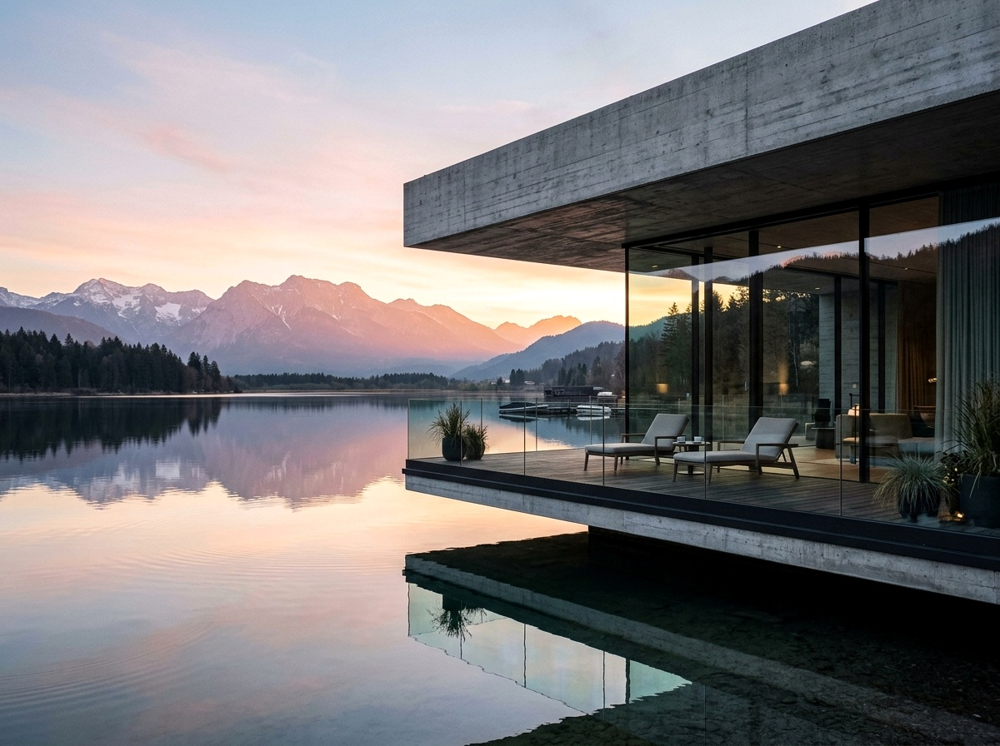
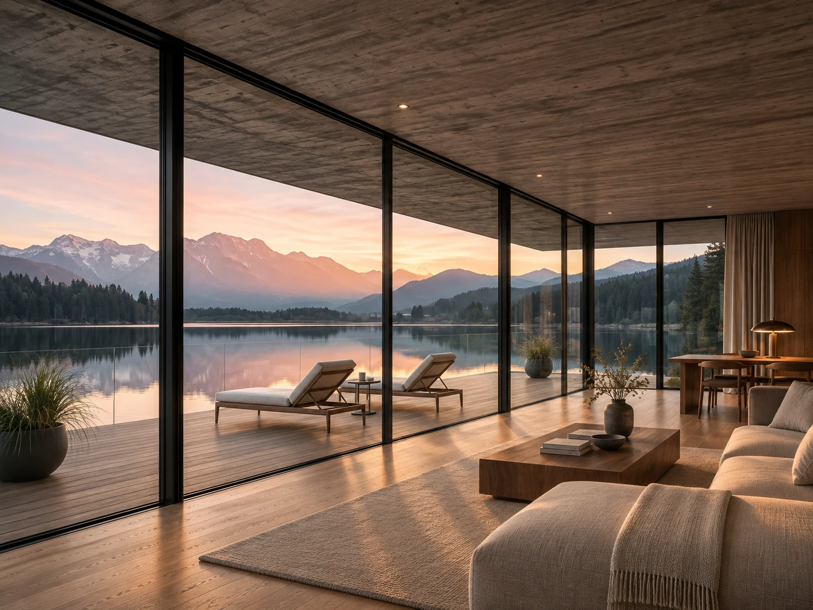

04 / Studio concept
Built for
what’s next.
Spaces shaped by the landscapes they belong to.

Project detail
Lakeside
Residence.
A low horizontal roof frames the view. Glass opens the living spaces to the water, while the concrete overhang defines a sheltered edge.

Material study
A quiet
palette.
- Board-formed concrete
- The ceiling carries the grain of the timber formwork.
- Full-height glazing
- Slim frames leave the view from the living room open to the water.
- Oak decking
- A warmer surface marks the transition to the terrace.
Studio approach
Begin with
the place.
The editorial layout gives the photography room and puts the design decision beside the detail it describes.